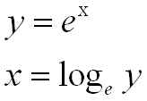
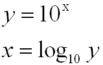
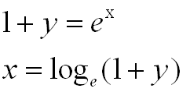
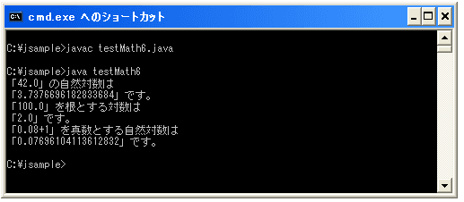

対数を求める(log, log10, log1p)
広告
指定した値の対数を求めます。「log」メソッドは底がeのもの、「log10」メソッドは底が10のもの、「log1p」メソッドは底がeで真数が(1+指定した値)のものとなります。
log public static double log(double a)
指定された double 値の自然対数値 (底は e) を返します。 パラメータ: a - 値 戻り値: ln a の値。a の自然対数
自然対数値とは下記のような値です。下記の2つは同じ式の書き方を変えたもので、「log」メソッドでは下記の「x」の値を求める事ができます。

log10 public static double log10(double a)
double 値の 10 を底とする対数を返します。 パラメータ: a - 値 戻り値: a の 10 を底とする対数
10を底とする数値とは下記のような値です。「log10」メソッドでは下記の「x」の値を求める事ができます。

log1p public static double log1p(double x)
引数と 1 の合計の自然対数を返します。x の値が小さい場合、log1p(x) の結果は、log(1.0+x) の 浮動小数点評価よりも ln(1 + x) の真の結果にかなり近くなります。 パラメータ: x - 値 戻り値: ln(x + 1) の値。x + 1 の自然対数
「log1p」メソッドでは下記の「x」の値を求める事ができます。

また、今回は使いませんがMathクラスでは自然対数の底 e にもっとも近い double 値の値として「Math.E」という定数が定義されています。「e」の値を今後使う場合には、この定数を利用して下さい。
public static final double E = 2.718281828459045
サンプルプログラム
では実際に試してみましょう。
class testMath6{
public static void main(String args[]){
double a = 42d;
double b = 100d;
double c = 0.08d;
System.out.println("「" + a + "」の自然対数は");
System.out.println("「" + Math.log(a) + "」です。");
System.out.println("「" + b + "」を根とする対数は");
System.out.println("「" + Math.log10(b) + "」です。");
System.out.println("「" + c + "+1」を真数とする自然対数は");
System.out.println("「" + Math.log1p(c) + "」です。");
}
}
上記を実際にコンパイルして実行してみると下記のようになります。

( Written by Tatsuo Ikura )
Profile

著者 / TATSUO IKURA
初心者～中級者の方を対象としたプログラミング方法や開発環境の構築の解説を行うサイトの運営を行っています。